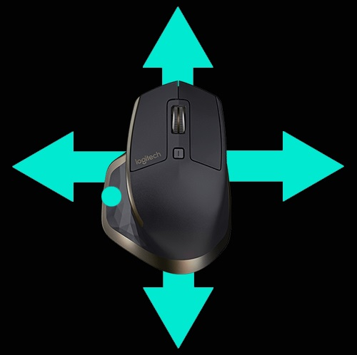

手勢
手勢提供與作業系統和應用程式的簡單直覺互動方式。
使用手勢可進行放大顯示文件、瀏覽網頁、旋轉影像等等動作。
Logitech Options 讓您可在使用 MX Master 滑鼠時，執行多種不同手勢。
啟用手勢設定
開啟「滑鼠」標籤，然後按一下反白的手勢按鈕。
當在按鈕動作清單中選取手勢按鈕後，此手勢設定會出現在右方，並提供有關於選取之設定的視覺指南。

除非選取另一組設定，否則選取的設定會一直保持有效。
注意：如果未指定手勢動作，則無法使用手勢。(您也可以將手勢按鈕指定為拇指按鈕、中間鍵以及模式切換按鈕。)
執行手勢
若要執行手勢，請在上下左右移動滑鼠時，按住手勢按鈕不放。
按一下手勢按鈕可執行與作用中之手勢相關的動作。

如需詳細資訊，請參閱 MX Master 使用指南。